Dialogue quatrième
Sur l'échange de Besançon contre la ville de Frankendal, l'an 1664, entre Guillemot et Jonnot, vignerons, un advocat de Besançon et Jean Raigot, Margotte et Gillotte, commères
Click a manuscript image to enlarge it. Cliquez sur une image du manuscrit pour l’agrandir.
Hover over, focus, or tap a dotted passage to display its editorial note. Survolez, sélectionnez au clavier ou touchez un passage en pointillé pour afficher sa note éditoriale.
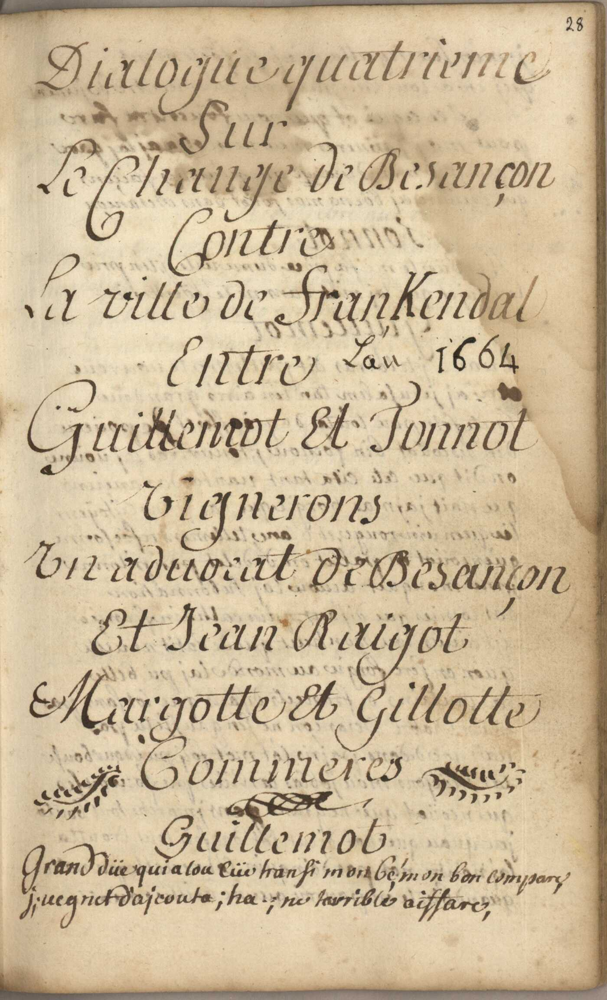
Dialogue quatrieme sur lechange de Besançon contre la uille de Frankendal l'an 1664 entre Guillemot et Jonnot uignerons un aduocat de Besançon et Jean Raigot Margotte et Gillotte commeres
Guillemot
Grand düe qui a lou cüe transi mon bé, mon bon compare,
ji uegnet d'aicouta; ha ; ne terrible aiffare,
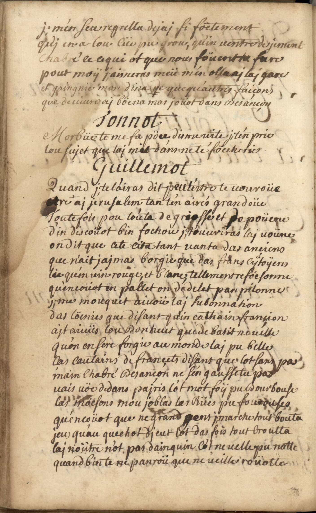
ji m'en scu regretta dejaj si föetement
qu'i en a lou cüe pu grou, qu'in uentre de jument
chabré ce cequi ot que nous föuerthe fare
pout moÿ j'aimeras meü m'en olla ai lai gare
et gaingnie mon dina de quequ'autres faiçons
que de uiure ai böena mas joüot dans Besançon
Tonnot
Morbüe te me fa pöu, dis me uite ji t'en prie
lou sujet que tai mit d'ans ne te söecheries
Guillemot
Quand ji te l'airas dit peut'estre te uouroüe
etre ai jerusalem tan t'en airés grandoüe
Toutefois pou t'outa de griosse et de poüere
d'in discoüot bin fochou ji t'ouuriras lai uoüne
on dit que cete cita tant uanta das anciens
que n'ait jajmas borgie que das frans cÿtoÿens
lie qu'en uin rouge, et blanc, tellement föesonne
qu'encoüot en pallet on de delet panpilonnes
ji mes mouquet aiuoü lai subonnation
das löenies que disant qu'in cathain françion
ait aiuüs lou bonheut que de batit ne uille
qu'on en fere forgie au monde lai pu belle
ças cautains de françets disant que cot sans pas
main chabré Besançon ne s'en gausse tu pas
uais uöe dedans pairis l'ot mot foÿ pu Bourbouse
las möesons mou joblas las Rües pu fourouses
qu'encoüot que ne grand gent ji marche tout coutta
jeusqu'au quechot di cut lot das fois tout croutta
lai noütre n'ot pas dainquin c'ot ne uelle pu notte
quand bin te ne panroü que ne ueille roüotte
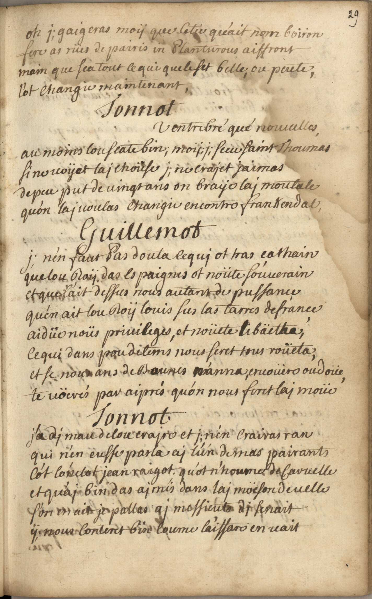
oh ji gaigeras moÿ que cetie qu'ait nom boiron
fere as rües de pairis in Planturous aiffront
main que sca tout ce qui que le fet belle, ou peute,
l'ot changie maintenant.
Tonnot
Uentrebé qué nouueilles,
au moins lou scate bin, moÿ, ji sceu saint Thoumas
si ne uoÿet lai choüses ji ne crajet jaimas
depeu put de vingt ans on braÿe lai moutale
qu'on lai uoulas changie encontre Frankendal
Guillemot
Ji n'en faut pas douta ce qui ot tras çathain
que lou Roÿ das espaignes ot noüte souuerain
et que l'ait dessus nous autant de pussance
qu'en ait lou roÿ louis sur las terres de françe
aidüe noüs priuileges, et noüte libäetha,
ce qui dans pou de temps nous feret tous roüeta,
et se nous ans de baunes n'anna, encoüere ou doüe,
te uöerés par aiprés qu'on nous feret lai moüe
Tonnot
J'a di mau de lou croire et ji n'en crairas ran
qui n'en eusse parla ai l'un de mas pairants
c'ot l'onclot jean raigot qu'ot n'houme de Caruelle
et qu'ai bin das aimis dans lai möeson de uelle
s'on en ait je pallas ai messieuts di senait
qi nous conteret bin coume l'aiffare en uait
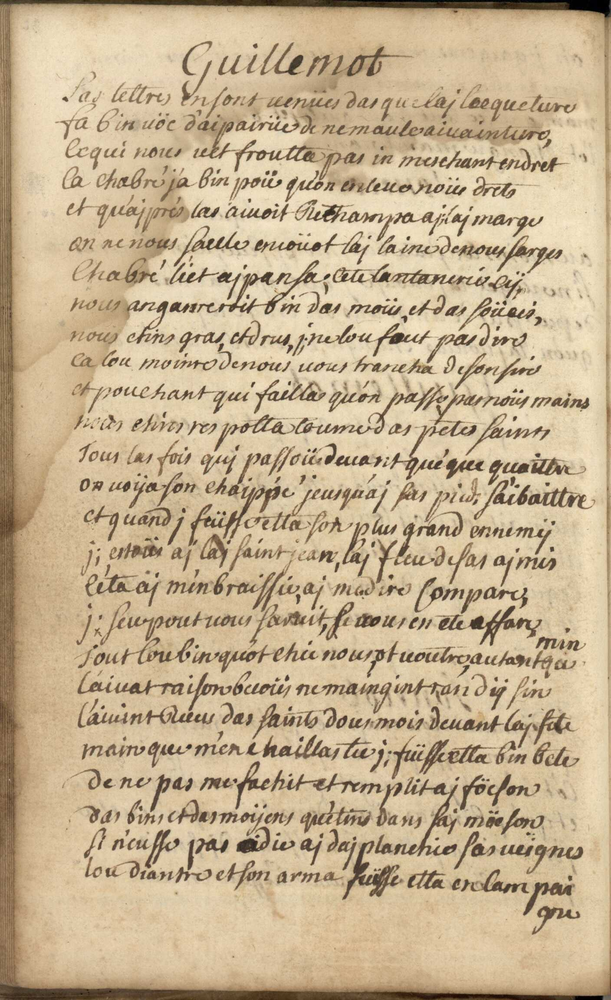
Guillemot
Las lettres en sont uenües das que lai coequeture
Fa bin uöe d'aipairüe de ne maule aiuainture,
ce qui nous uet froutta pas in meschant endret
ca chabré j'a bin poü qu'on enleue noüs drets
et qu'aiprés las aiuoit rechampa ai, ai marge
on ne nous saule encoüet lai laine de nous sarges
Chabré liet aipansa cete lantanerie cÿ
nous anganreroit bin das moüs et des soücis,
nous etins gras et drus, ji ne lou faut pas dire
ca lou moinre de nous uous trancha de son sires
et pouchant qui faillas qu'on passe par noüs mains
nous etins respolta coume das petes saints
tous les fois qui passoü deuant quéque quaittre
on uoÿa son chaippé jeusqu'ai sas pied s'aibaittre
et quand i feüsse etta son plus grand ennemÿ
ji estoüs ai lai saint jean, lai fleu desas aimis
c'eta ai m'enbraissie, ai me dire compare,
ji scu pout uous saruit, se uou en ete affare,
tout lou bin qu'ot chie nous, ot uoutre autant min que
l'aiuint recus das saints dou mois deuant lai fete
main que m'en chaillas tu ji fuisse etta bin bete
de ne pas me fachit et remplit ai föeson
das bins et das moÿens qu'etins dans sai möesons
Si n'eusses pas die ai daiplanchir sas ueignes
lou diantre et son arma fuisse etta en campaigne
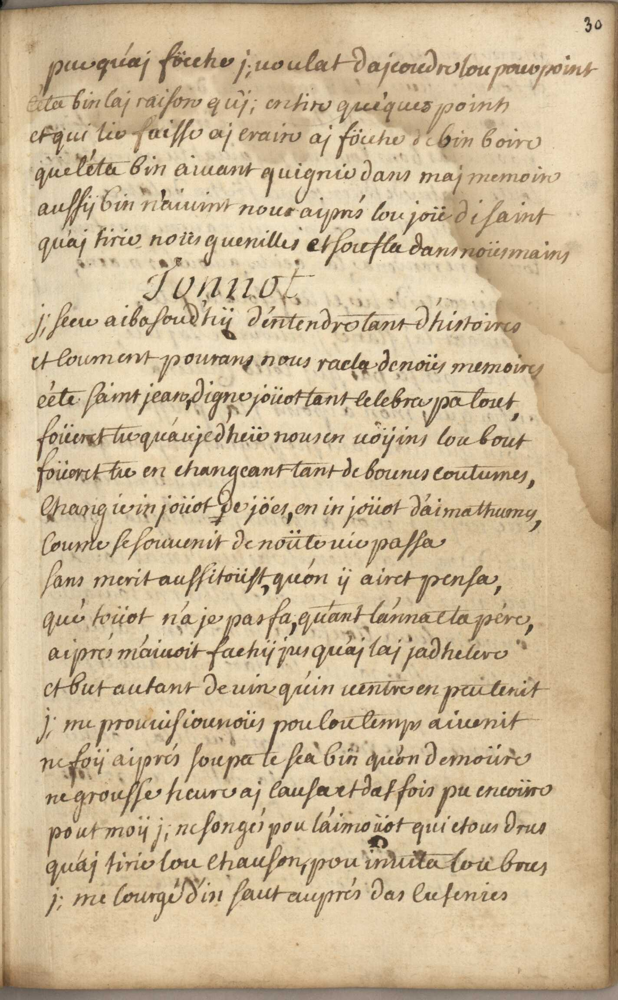
puiqu'ai föeche ji uoulat daicoudre lou pourpoint
ceta bin lai raison qu'ji entire quéques points
et qui lie faisse ai craire ai föeche de bin boire
que c'éta bin aiuant quignie dans mai memoire
aussÿ bin n'aiuint nous aiprés lou joü de saint
qu'ai tïrie noüs guenilles et soufla dans noüs mains
Tonnot
Ji sceu aibasoud'hÿ d'entendre tant d'histoires
et coument pourans nous racla de noüs memoires
cete saint jean, digne joüot tant celebre patout,
foüeret tu qu'aujedheü nous en uoÿins lou bout
foüeret tu en changeant tant de bounes coutumes,
changie in joüot de jöes, en in joüot d'aimathumes
coume se souuenit de noüte uie passa
sans merit aussitoüst qu'on ÿ airet pensa,
qué toüot n'a je pas fa, qu'ant l'anna eta pére,
aiprés n'aiuoit fachÿ pu qu'ai lai jadhelere
et but autant de uin qu'in uentre en peu tenit
ji me prouuisiounoüs pou loutemps aiuenit
ne foÿ aiprés soupa te sca bin qu'on demoüre
ne grousse heure ai causart das fois pu encoürre
pout moÿ ji ne songés pour l'aimoüot qui etous drus
qu'ai tirie lou chauson, pou imuta lou bous
ji me lourgé d'in saut auprés das cusenies
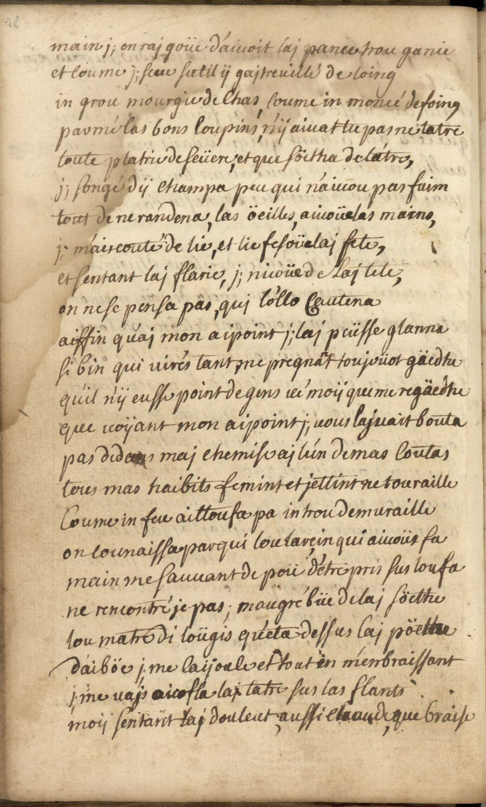
main ji en raigoüe d'aiuoit lai pance trou ganie
et coume si scue sutil ÿ gaitreuille de loing
in grou mourgie de chas, coume in moncé de foing
parmé las bon coupins, nÿ aiuat tu pas ne latre
toute platrie de feüere, et que söetha de latre
ji songé d'ÿ champa peu qui n'aiuou pas faim
tout de ne randena las öeilles aiuoüe las mains,
ji n'aiscoute de lie, et lie se soüe lai fete,
et sentant lai flarie, ji nicoüe de lai tete,
on ne se pensa pas, qui l'ollo cautena
aiffin qu'ai mon aipoint ji lai peüsse glanna
si bin qui uirés tant me pregnât toujoüot gäedhe
qu'il n'ÿ euse point de gens ué moÿ que me regäedhe
que uoÿant mon aipoint ji uous lai uait bouta
pas dedans mai chemise ai l'un de mas coutas
tous mas haibits femint et jettint ne touraille
Coume in feu aittoufa pas in trou de muraille
on counaissa parqui lou larcin qui aiuoüs fa
main ne sauuant de poü d'etre pris sus lou fa
ne rencontré je pas maugré büe de lai söethe
lou matre di loügis qu'eta dessus lai pöethe
d'aiböe ji me laÿoule et tout en m'embraissant
ji me uay aicossa las tatre sus las flants
moÿ sentant lai douleur, aussi chaude que braise
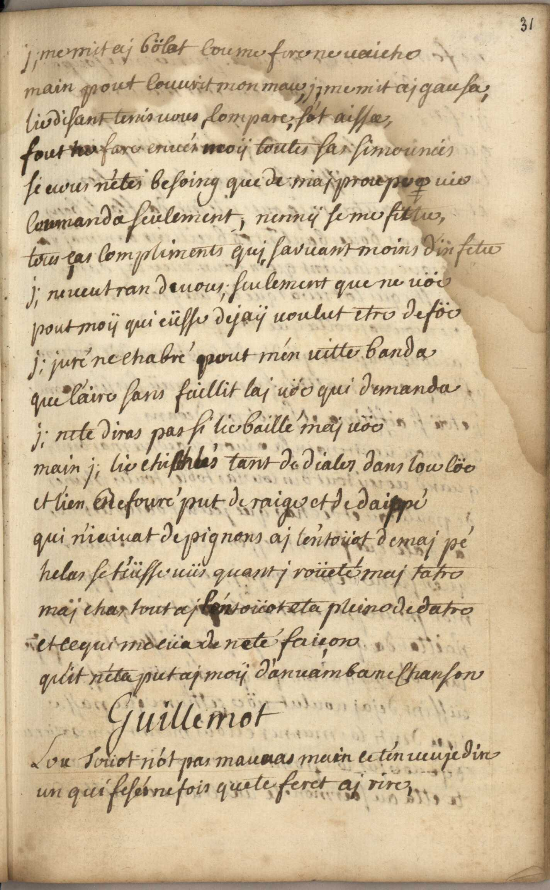
ji me mit ai bölat coume fere ne uaiche
main pout couurir mon mau, ji me mit ai gausa,
lie disant tenis uous, compare, s'ot aissa,
fout te fare enués moÿ toutes sas simounies
Si uous n'etes besoing que de mai proupre uie
Commanda seulement, nennÿ se me fiche,
tous ças compliments qui saruant moins d'in fete
ji ne ueut ran de uous, seulement que ne uöe
pout moÿ qui eüsse dejaÿ uoulut etre de föe
ji juré ne chabré pout m'en uitte banda
que l'aire sans faillit lai uöe qui demanda
ji ne te diras pas si lie baille mai uöe
main ji lie chishées tant de diales dans lou cöe
et lien Refouré put de raige et de daippé
qui n'i aiuat de pignons ai tentoüot de mai pé
helas se t'eüsse uüs quant i roüete mai tatre
maï chas tout ai l'entoüot eta pleine de datre
et ce qui ne cüa de ne té faiçon
qu'it n'eta put ai moÿ d'anuamba ne chanson
Guillemot
Lou toüot n'ot pas mauuas main ce t'en ueu je dire
un qui fesés ne fois quete feret ai rire
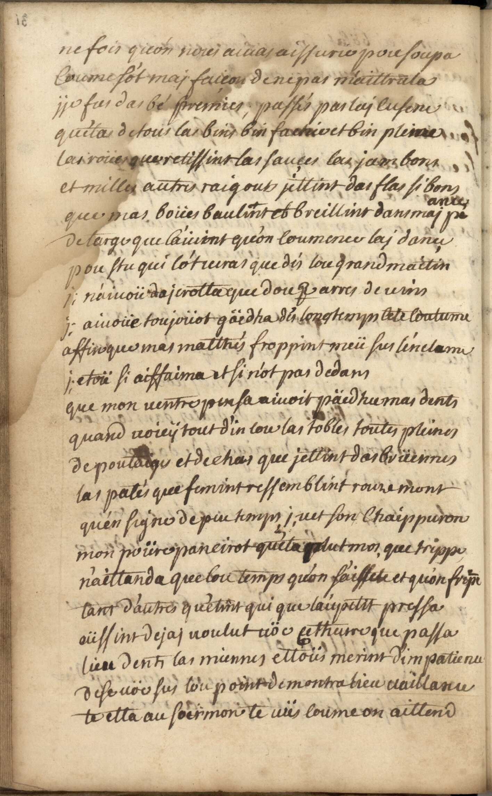
ne fois qu'on nous aiuas aissurie pou soupa
coume s'ot mai faiçon de ne pas m'aittrala
jje fus das bé premier, passés par lai cusene
quéta de tous las bins bon fachie et bin pleine
las roüe que retissint las sauçes las jambons
et milles autres raigout jettint das flas si bon ance,
que mas boües baulint et breillint dans mai pé
de targe qui l'aiuint qu'on coumence lai dançe
pou stu qui l'ot ueras que dés lou grand maitin
ji n'aiuoü daicrotta que dou uarres de uins
ji aiuoüe toujoüot gäedha dés longtemps cete coutume
affin que mas malthés froppint meü sus l'enclume
ji etoü si aiffaima et si n'ot pas dedans
que mon uentre pensa aiuoit päedhu mas dents
quand uoicÿ tout d'in cou las tobles toutes pleines
de poutaige et de chas que jettint das crüennes
las patés que semint ressemblint rouzemons
qu'en signe de pue temps ji uet son chaippuron
mon poüre pancirot queta plut mos que trippe
n'aittanda que lou temps qu'on s'aissete et qu'on fri[p]pe
tant d'autres qu'etint qui que l'aipetit pressa
eüffint dejai uoulut uöe cetheurre que passa
lieu dents las miennes ettoüs merint d'impatience
de se uöe sus lou point de montra lieu uaillance
te etta au soermon te uüs coume on aittend
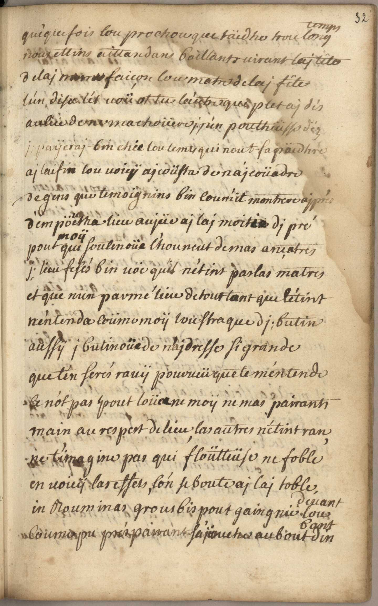
quéque fois lou prochou que täedhe trou longtemps
nous ettins aittandans baillants uirant lai tête
de lai memes faiçon lou matre de lai fëte
l'un disa l'et uoü ot tu l'autre qui plet ai dis
aulüe de ne machoüere ji n'en poutheüsse diz
ji paÿerai bin chie lou temts qui nout fa päidhre
ai lai fin lou uoicÿ aicoüsta de n'aicoüadre
de gens que temoignins bin coum'it montrere aiprés
d'empöuetha lieu aujüe ai lai moités di pré
pout moÿ qui soutenoüe l'houneur de mas ancetres
ji lieu fesés bin uöe qu'il n'etint pas las matres
et que nun parmé lieu de tout tant que l'etint
n'entanda coüme moÿ lou straque di butin
aussÿ i cutinoüe de n'aidresse si grande
que t'en serés rauÿ pourueü que te m'entendre
ce n'ot pas pout loüa ne moÿ ne mas pairrants
main au respest de lieu, las autres n'etint ran,
ne t'imagine pas qui floütteüse ne foble
en uoicÿ las effets, l'on se boute ai lai toble,
in Rouminas grousbis pout gaingnie lou deuant
coume pu prés pairant sajioutu au bout din bant
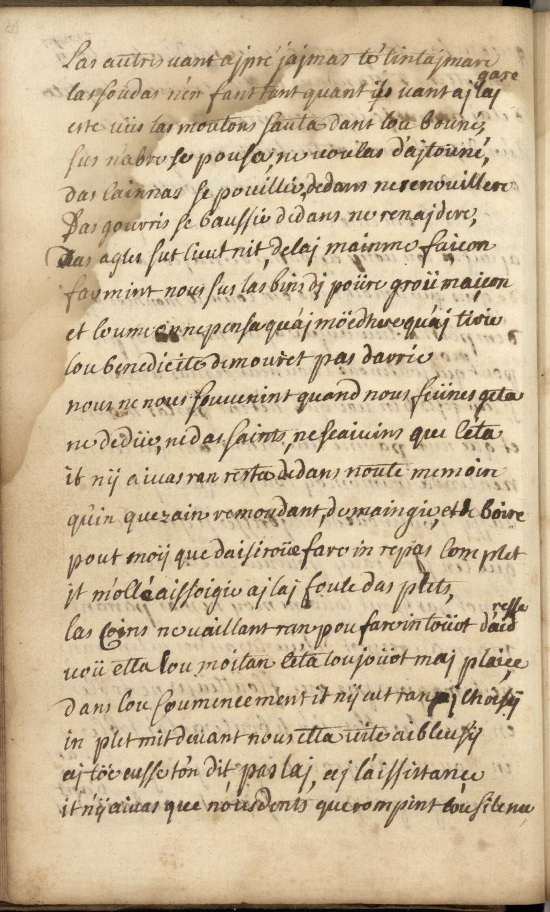
las autres uant aipré jaimas te tintaimare
las soudas n'en fant tant quant il uant ai lai gare
este uüs las moutons sauta dans lou bouni,
sus n'abre se pousa, ne uoulas d'aitouné,
das cainnas se pouillie dedans ne renouillere
das gourris se baussie dedans ne ren aidere,
das agles sut liuet nit, delai mainme faiçon
farmint nous sus las bin di poüre grou maiçon
et coume on ne pensa qu'ai möedhre qu'ai tirie
lou benedicite de mouret pas darrie
nous ne nous souuenint quand nous scünes geta
ne de düe, ne das saints, ne scaiuins que c'eta
il nÿ aiuas ran resta dedans noute memoire
qu'in quezain remoudant, de maingie, et de boire
pour moÿ que daisiroüe fare in repas complet
il m'ollé aissoigie ai lai foule das plets,
las coins ne uaillant ran pou fare in toüot d'aidresse
uoü etta lou moitant c'eta toujoüot mai plaiçe
dans lou coumencement il n'ÿ eut ran ai choisÿ
in plet mit deuant nous etta uite aibleusÿ
ai töe eusse t'ont dit, pas lai, ai l'aissistançe
il n'y aiuas que nous dents que rompint lou silence
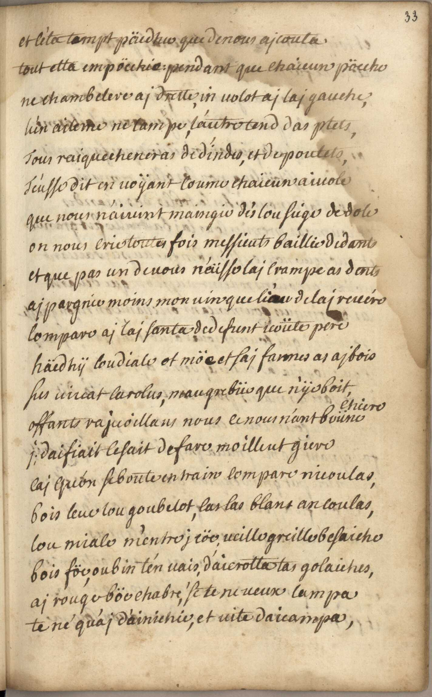
et céta tempt päedhu que de nous aicouta
tout etta empöechie pendant que chaicun pöeche
ne chambelere ai drette in uolot ai lai gauche,
l'un ailume ne lampe, l'autre tend das plats
tous raiquechencra de dindes, et de poulets,
j'eusse dit en uoÿant coume chaicun aiuole
que nous n'aiuint maingie déz lou siege de dole
on nous crie toutesfois messieuts baillie dedants
et que pas un deuous neüsse lai crampe as dents
aipargnie moins mon uin que l'eau delai reuére
compare ai lai santa de defunt uoüte pere
häedhÿ lou diale ot möe et sai farmes as aibois
sus uiuat carolus, maugre büe que n'ÿe boit,
offants rajuoillans nous ce nous n'ant boüne chiere
ji daifiait cesait de fare moilleut giere
cai qu'on se boute en train compare nicoulas,
bois leue lou goubelot, cas las blans an coulas,
lou miale m'entre j cöe, ueille greille besaiche
bois föe, ou bin t'en uais, d'aicrotta las golaiches,
ai rouge böe chabré, se te ne ueux lampa
te né qu'ai d'ainichie, et uite daicampa,
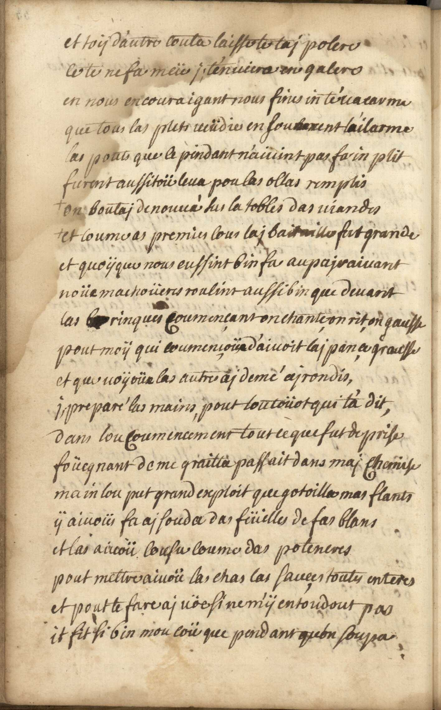
et toÿ d'autre couta laisse tu lai polere
ce te ne fa meü ji t'enuiera en galere
en nous encouraigant nous fires in té uacarme
que tous las plets ueüdie en sounerent l'ailarme
las pouts que cepindant n'aiuint pas fa in plit
furent aussitoü leua pou las ollas remplis
on boutai de nouué sus la tobles das uiandes
et coume as premier cous lai baitailles fust grande
et quoÿques nous eussint bin fa aupairaiuant
noüe machoüeres roulint aussi bin que deuant
las [tache] b[a]rinques coumençant on chante on rit on gausse
pout moÿ qui coumençoüe d'aiuoit lai pançe grausse
et que uoÿoüe las autres ai demé airondis,
ji preparé las mains, pout lou toüot qui t'a dit,
dans lou coumencement tout ce que fut de prise
foüegnant de me graitta passait dans dans mai chemise
main lou put grand exploit que gotoilles mas flants
ÿ aiuoüe fa ai souda das scüelles de far blans
et las aiuoü cousu coume das poteneres
pout mettre aiuoü las chas las sauçes toutes enteres
et pout te fare ai uöe si ne m'ÿ entoudout pas
it fit si bin mou coü que penant qu'en soupa,
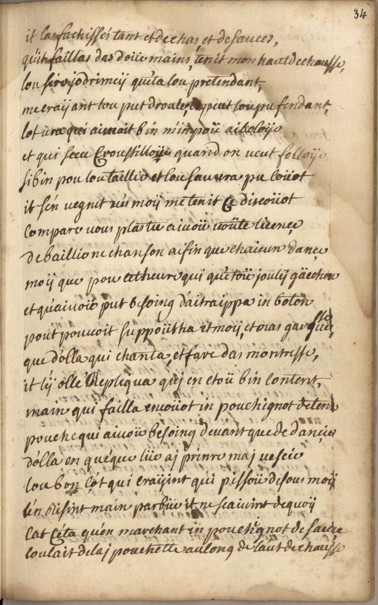
it las fachissés tant et de chas, et de sauces,
qu'it faillas das doüe mains, tenir mon haut de chausse,
lou sire jodrimeÿ qu'eta lou pretendant,
me craÿant lou put droule, et peut lou pu fendant,
l'ot ura qui aimait bin m'in poü aiboloÿe
et qui sceu croustilloÿe quand on ueut folloÿe
si bin pou lou taillie et lou sauura pu coüot
it s'en uegnet ués moÿ me tenit ce discoüot
Compare uous plas tu aiuoü uoüte licençe,
de baillie ne chanson aifin que chaicun dançe,
moÿ que pou cetheure qui qué toü joulÿ gäechon
et qu'aiuoü put besoing d'aitraippa un boton
pout pouuoit suppoütha et moÿ, et mas garguesse
que d'olla qui chanta, et fare das montresse,
it l'ÿ olle repliqua qui en etoü bin content,
main qui failla encoüot in pouchignot de tems
pouche qui aiuoü besoing deuant que de dançie
d'olla en quéque lüe aiprinre mai uescie
lou bon ç'ot qui craÿint qui pissoü desous moÿ
l'en risint main parbüe it ne scaiuint de quoÿ
cat c'eta qu'en marchant in pouchignot de sauce
coulait delai pouchette au long de l'aut de chausse
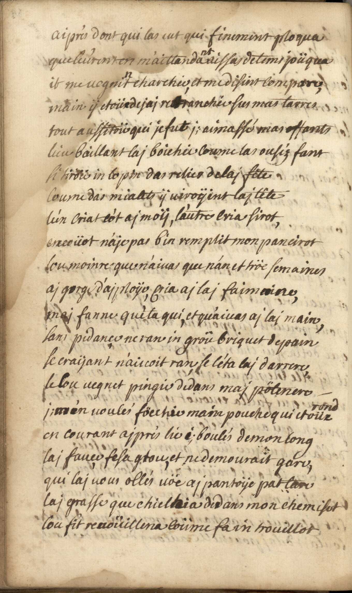
aiprés dont qui las uet qui finement ploqua
que l'eurent en m'aittandant aissas de temps joüque
it me uegnint charchie, et me disint compare,
main ÿ etoüe dejai retranchie sus mas tarres
tout aussitoü qui je fut ji aimassé mas offants
lieu baillant lai boichie coume las ouséz fant
si tiroü in lopin das relies delai fite
coume das mialets ÿ uiroÿent lai tête
l'in criat c'ot ai moÿ, l'autre cria sirot,
encoüeot n'aie pas bin remplit mon pancirot
lou moinre que n'aiua que n'an et tröe semaines
ai gorge d'aiploÿe, cria ai las faimaine,
mai fanne qu'eta qui, et qu'aiuas ai lai main,
sans pidance ne ran in groü briquet de pain
se craÿant n'aiuoit ran se l'eta lai darrere,
le lou uegnet pingie dedans mai pötenere
ji m'en uoulés föechie main pouche qui etoüe rond
en courant aiprés lié i boulés de mon long
lai fauçe fesa glou, et ne demourait gare,
qui lai uous ollés uöe ai pantoÿe par tare
lai grasse qui chiclhia dedans mon chemisot
lou fit recoüillena coüme fa in trouillot
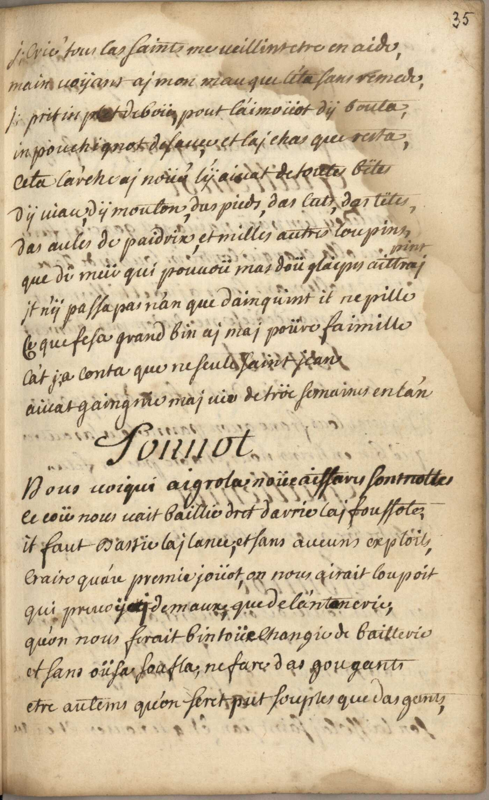
ji crié tous las saints me ueillint etre en aide,
main uoÿans ai mon mau que c'eta sans remede,
ji prit in plet de boü, pout l'aimoüot dÿ bouta,
in pouchignot de sauce et lai chas que resta,
ceta l'arche ai noüe l'ÿ aiuat de toute bëtes
dÿ uiau, dÿ mouton, das pieds, das cuts, das tëtes,
das aules de paidrix, et milles autres loupins,
que di meü qui pouuoü mas doü glaipes aittraipint
it n'ÿ passa pas n'an que dainquint it ne pille
ce que fesa grand bin ai mai poüre faimille
c'at jia conta que ne seule saint jean
aiuat gaingnie mai uie de tröe semaines en l'an
Tonnot
Nous uoiqui aigrola noüe aiffares sont nottes
ce coü nous uait baillie dret darries lai foussote,
it faut bastie lai lance, et sans aucuns exploits,
craire qu'au premie joüot, on nous airait loupoit
qui preuoÿ ai de maux que de l'antonerie,
qu'on nous feroit bin toüe changie de baitterie
et sans oüsa soufla, ne fare das gougants
etre autems qu'on seret put souples que das gants,
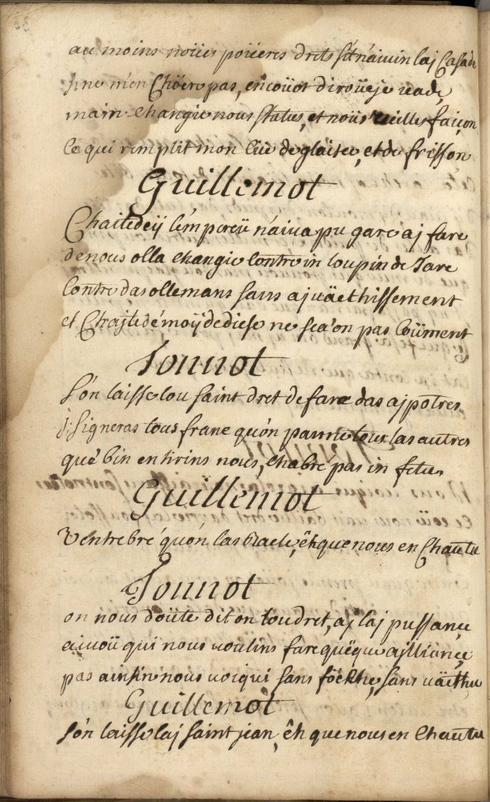
au moins noües poüres drets s'il n'aiuin lai casade
ji ne m'en chöere pas, encoüot diroüeje uade,
main changie nous statue et noüs ueilles faiçon
ce qui remplit mon cüe de glaisce, et de frisson
Guillemot
Chaitedeÿ l'empereü n'aiua pu gare ai fare
de nous olla changie contre in loupin de tare
contre das ollemans sans aiuäethissement
et chajte dé moÿ de diese ne sca'on pas coüment
Tonnot
s'on laisse lou saint dret de fare das aipotres
ji signeras tous franc qu'on panne tous las autres
qué bin en tirins nous, chabré pas in fetu
Guillemot
Uentrebré qu'on las racle, ëh que nous en chauta
Tonnot
On nous doüte dit on lou dret, ai lai pussance
aiuoü qui nous uoulins fare quëque ailliance,
pas ainsin nous uoiqui sans föeche, sans uäithu
Guillemot
S'on laisse lai saint jean, êh que nous en chauta
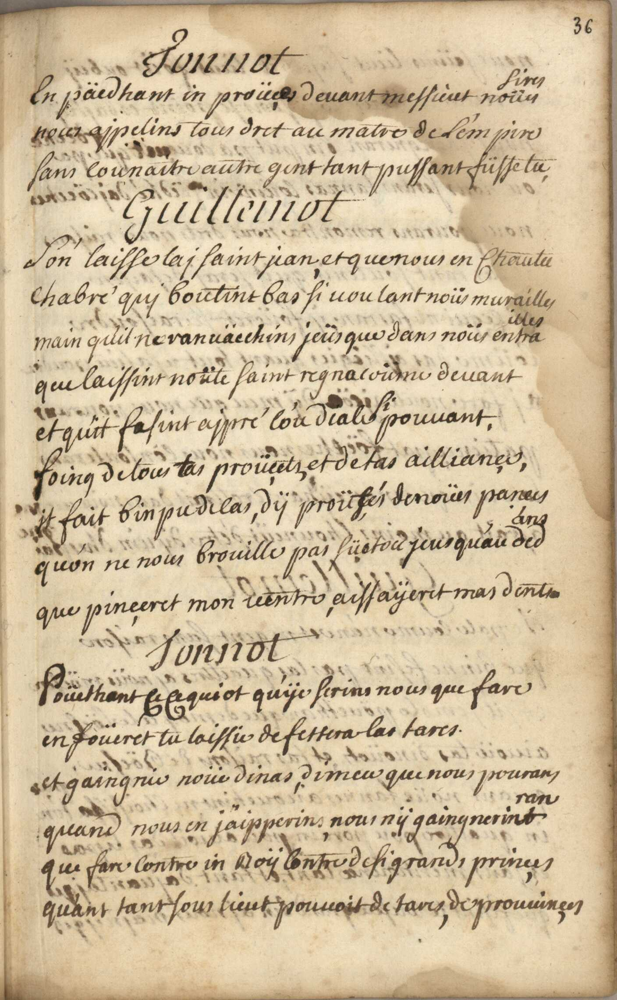
Tonnot
En päedhant in proüçes deuant messieur noüs sires
nous aipelins tous dret au matre de l'empire
sans counaitre autre gent tant pussant füsse tu,
Guillemot
S'on laisse lai saint jean et que nous enchauta
chabré qui boutint cas si uoulant noüs murailles
main qu'il ne ranuäechins jeüsque dans noüs entrailles
que laissint noüte saint regna coüme deuant
et qu'il fasint aipré l'ou diali si pouuant,
soing de tous tas proücets, et de tas ailliançes,
il fait bin pu de cas, dÿ proüses de noües pances,
qu'on ne nous brouille pas süstou jeusqu'au dedans
que pinçeret mon uentre, aissaÿeret mas dents.
Tonnot
Poüethant ce ce qui ot qu'ÿe serins nous que fare
en foüeret tu laissie de fettera las tares
et gaingnie noüe dinas, dimeu qui nous pourans
quand nous en jaipperins nous nÿ gaingnerint ran
que fare contre in Roÿ contre de si grands prinçes
qu'ant tant sous lieur pouuoir de tares, de prouuinçes,
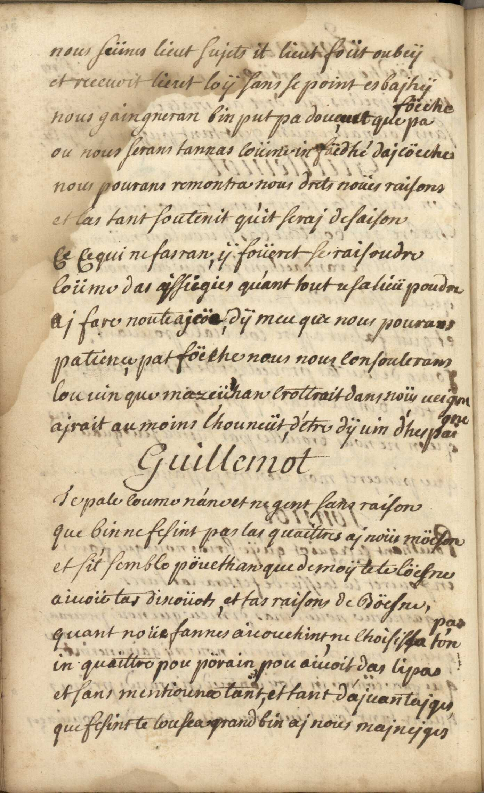
nous scünes lieur sujets it lieur foüt oubeÿ
et receuoit lieret loÿ sans se point esbaihÿ
nous gaingneran bin put pa douçeut que pa foëche
ou nous serans tannas coüme in faëdhé daicöeches
nous pourans remontra nous drets noües raisons
et las tant soutenir qu'il serai de saison
Ce ce qui ne fas ran, ÿ foüeret se raisoudre
coüme das aissiegies qu'ant tout usa lieü poudre
ai fare noute aicöe, d'ÿ meu que nous pourans
patiençe par föeche nous nous consoulerans
lou uin que mazeühan crottrait dans noüs ueigne
airait au moins l'houneür, d'etre dy uin d'hespaigne
Guillemot
Tu pale coume n'ane et ne gent sans raison
que bin ne fesint pas la quaittres ai noüs möeson
et s'il semble pöuethan que de moÿ tete löesnes
aiuoü tas discoüots, et tas raisons de Röesne
quant noüe fannes aicouchint, ne choisissa t'on pas
in quaittre pour pörain pou aiuoit das lipas
et sans mentiouner tant, et tant d'aiuantaiges
que fesint te lou sca grand bin ai nous maineiges
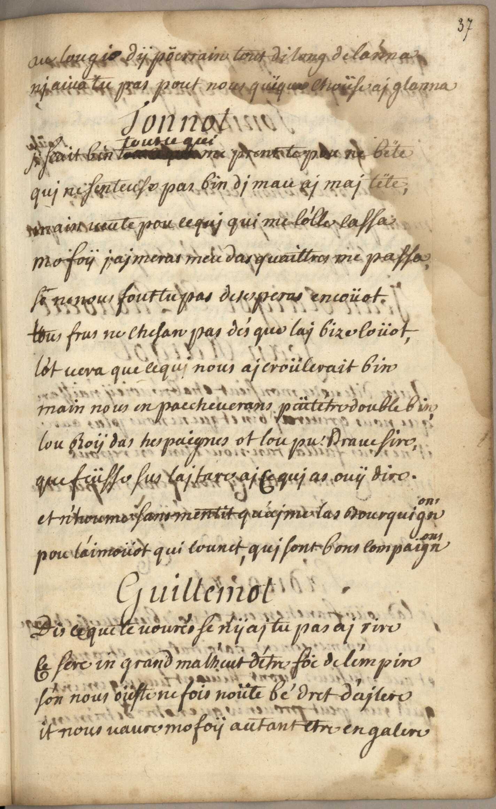
au lougis dÿ pöerrain tout di long de l'anna
ni aiua tu pas pout nous quéques choüse ai glanna
Tonnot
Ji scait bin tous ce qui me prent te pou ne bëte
qui ne senteuse pas bin di mau ai mai tëte,
main ueu te pou cequi qui me l'olle cassa,
mo foÿ j'aimeras meu das quaittres me passa,
Sé ne nous fout tu pas desesperas encoüot.
Tous frus ne chesan pas dés que lai bizecoüot,
L'ot uera que cequi nous aicroülerait bin
main nous enpaecheuerans païtetre double bin,
lou Roÿ des hespaignes ot lou pu braue sire,
que feüsses sus lai tare ai ce qui as ouÿ dire.
et n'houme sans mentir qu'aime las Bourquignons
pou l'aimoüot qui counet, qui sont bons compaignons
Guillemot
Dis ce qui te uourés se n'ÿ ai tu pas ai rire
ce sere in grand malheur d'etre föe de l'empire
S'on nous oüste ne fois noüte bé dret d'ailere
it nous uaure mo foÿ autant etre en galere
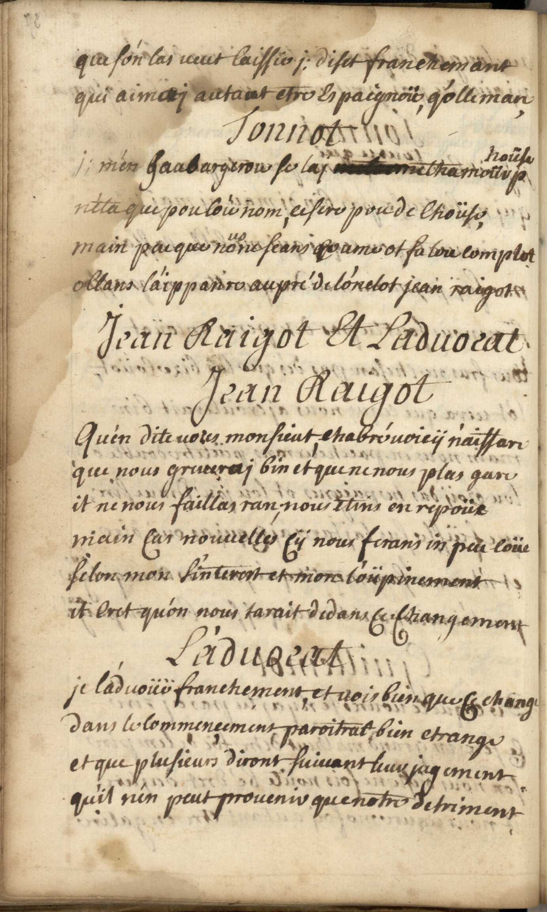
que s'on las ueut laissie ji diset franchemant
qui aimoi autant etre espaignoüe qu'olleman
Tonnot
Ji m'en gaubargerou se lai methamoürphoüse
n'eta que pou lou nom, ce sere pou de choüse,
main paeque nous ne scans qu'ame ot sa lou complot
ollans l'aippanre aupré de l'onclot jean raigot.
Jean Raigot et l'aduocat
Jean Raigot
qu'en dite uous monsieur, chabré uoicÿ n'aiffare
que nous greuerai bin et que ne nous plas gare
it ne nous faillas ran, nous etins en repoüx
main cas nouuelles cÿ nous ferant in peu coüe
selon mon s'interest et mon l'oüpinement
it cret qu'on nous tarait dedans ce changement
L'aduocat
Je l'aduoüüe franchement et uois bien que ce change
dans le commençement paroitrat bien etrange
et que plusieurs diront suiuant leur jugement
qu'il n'en peut prouvenir que notre detriment
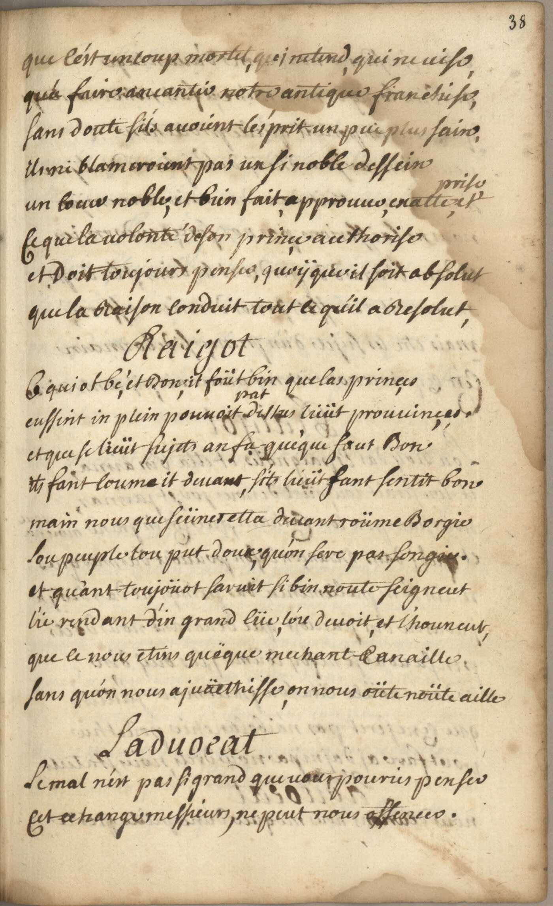
que c'est un coup mortel, qui netend, qui ne uise
qu'a faire aneantir notre antique franchise,
sans doute s'ils auoient l'esprit un peu plus sain,
Ils ni blameroient pas un si noble dessein
un coeur noble, et bin fait, approuue, cratte et prise
ce que la uolonté de son prinçe authorise
et doit toujours penser, quoÿ que il soit absolut
que la raison conduit tout ce qu'il a resolut.
Raigot
Ce qui ot bé, et bon, il foüt bin que las prinçes
eussint in plein pouuoit par dessus lieür prouuinçes,
et que se lieür sujets an fa que'que faut bon
its fant coume it deuant, sils lieür fant sentir bon
main nous qui scünes etta deuant roüme borgie)
Lou peuple lou put doux qu'on fere pas songie
et qu'ant toujoüot saruit si bin noute seigneur
lie rendant d'in grand cüe, lou deuoir et l'honneur
que ce nous etins quëque mechant canaille
sans qu'on nous aiuäethisse, on nous oüte noüte aille
L'aduocat
Le mal n'est pas si grand que uous pouries penser
cet echange messieurs, ne peut nous offencer.
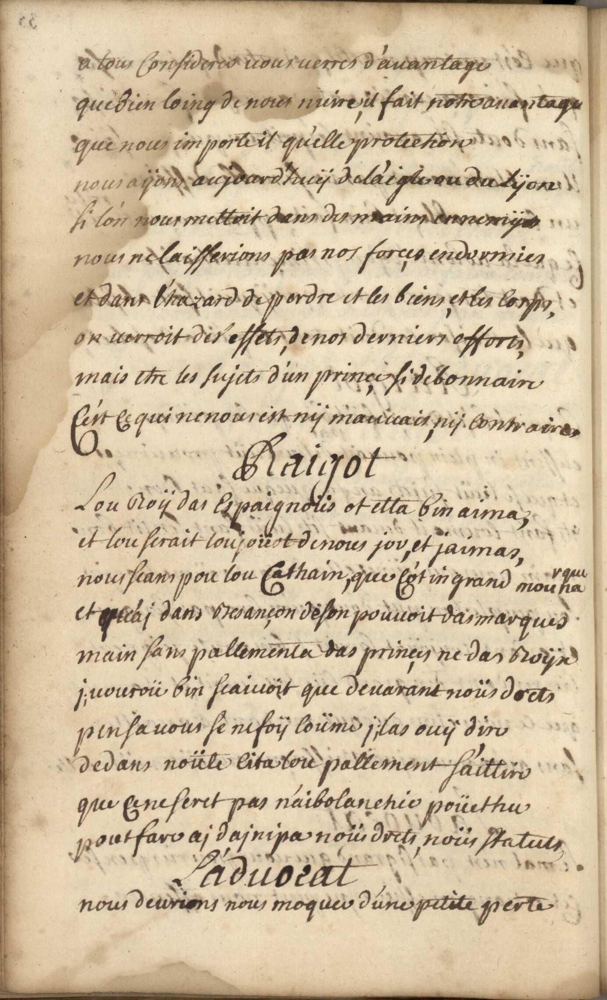
a tous considerer uous uerrez d'auantage
que bien loing de nous nuire, il fait notre auantage
que nous importe il qu'elle protection
nous aÿons aujourd'huÿ de l'aigle ou du lÿon
si l'on nous mettoit dans des mains ennemÿs
nous ne laisserions pas nos forces endormies
et dans l'ahzard de perdre et les biens et les corps,
on uerroit des effets de nos derniers efforts,
mais etre les sujets d'un prinçe si debonnaire
c'est ce qui ne nous est nÿ mauvais, nÿ contraire.
Raigot
Lou Roÿ das Espaignoüs ot etta bin aima,
et lou serait toujoüot de nous jou, et jaimas,
nous scans pou lou cathain, que c'ot in grand mounarque
et qu'ai dans Besançon de son pouuoir das marquis
main sans pallementa das prinçes, ne das Roÿx
ji uouroü bin scauoit que deuarant noüs drets
pensa uous se ne foÿ coüme ji las ouÿ dire
dedans noüte cita lou pallement s'aittire
que ce ne seret pas n'aibolanchie poüethu
pour fare ai dainipa noüs drets, noüs statuts
L'aduocat
Nous deurions nous moquer d'une petite perte
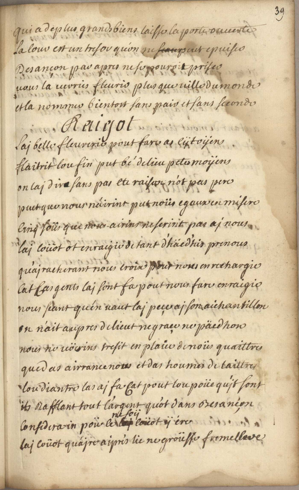
qui a de plus grands bien laisse la porte ouuerte
La cour est un tresor qu'on ne scaie peut epuiser
Besançon par apres ne se pouroit prises
uous la uerries fleurir plus que uille du monde
et la nommer bientost sans pair et sans seconde
Raigot
Lai belle fleurerie pour fare as cÿtoÿens
flaitrit lou fin put bé de lieu petes moÿens
on lai dira sans pas cte raison n'ot pas pere
peut que nous n'airint put noüs egaux en misere
cinq soüs que nous airins ne serint pas ai nous
lai coüot ot enraigie de tant d'häed'his prenous
qu'airacherant nous croix pour nous en rechargie
Car cas gents lai sont fa pour nous fare enraigie
nous scant qu'en uaut lai peçe ai son aichantillon
en n'ait aupres de lieur ne graçe ne päedhon
nous ne uöirins tresit en plaice de noüs de quaittres
que das airrance nous et das houmes de laittres
lou diantre las ai fa car pour lou poüe qu'il sont
ils rafflant tout l'argent qu'ot dans Besançon
considera in poü le ne foÿ coüot ÿ ére
lai coüot qu'aire aiprés lie ne groüsse fremellere
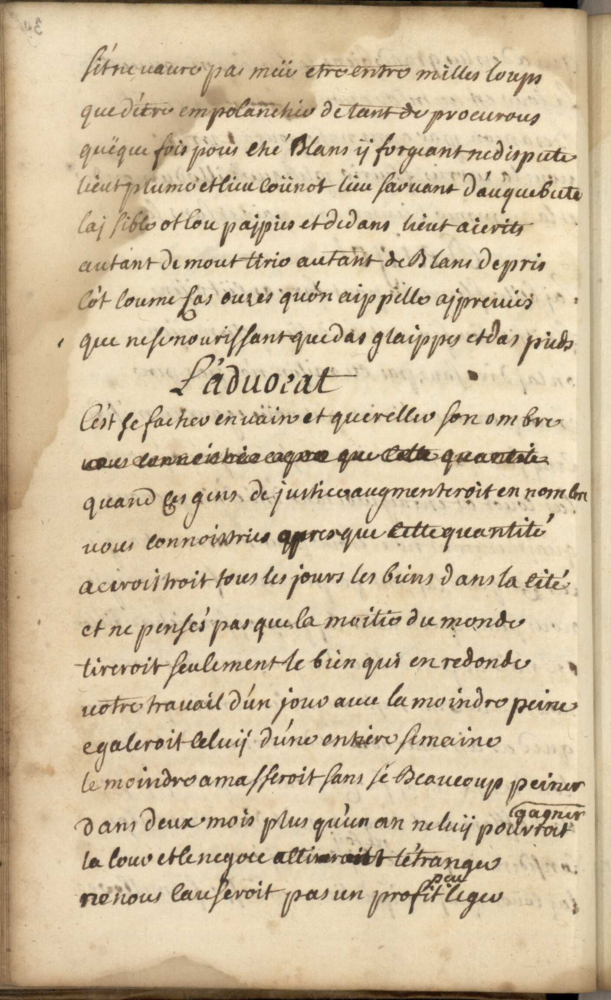
S'it ne uaure pas meü etre entre milles loups
que d'etre empolanchie de tant de procurous
quëque fois pour etre blans ÿ forgeant ne dispute
lieur plume et lieu coünot lieu saruant d'auquebute
lai sible ot lou paipier et dedans lieur aicrits
autant de mout tirie autant de blans depris
C'ot coume cas ouzes qu'on aippelles aipreuies
que ne se nourissant que das glaippes et das pieds
L'aduocat
C'est se facher en uaïn et quereller son ombre
uous connoisries apres que cette quantité
quand ces gens de justice augmenteroit en nombre
uous connoisries apres que cette quantité
accroistroit tous les jours les biens dans la cité
et ne pensés par que la moitié du monde
tireroit seulement le bien qui en redonde
uotre trauail d'un jour auec la moindre peine
egaleroit celuÿ d'une entiere semaine
le moindre amasseroit sans le beaucoup peiner
dans deux mois plus qu'un on ne luÿ pourtoit gagner
la cour et le negoce attireraint l'étranger
ne nous causeroit pas un profit peu leger
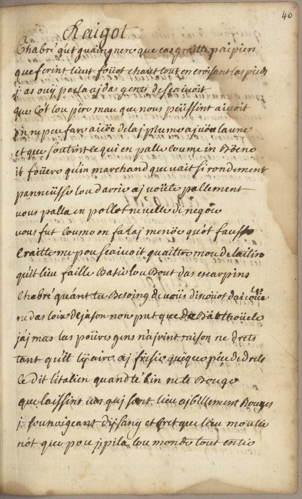
Raigot
Chabré q'ut guaingnere que cas graitte paipiers
que serint lieur foüot chaut tout en croisant las pieds
j: as ouÿ par la ai das gents de scaiuoir
que c'ot lou përe mau que nous peüssint aiuoit
on ne peu fare aicöe de lai plumee ai uöu la une
et que soutint ce qui en palle coume in böene
it foüere qu'in marchand que uait si rondement
panneüsse lou darrie ai uoüte pallement
uous palla en pollot ne uelle de negoce
uous fut coume on falai menöe qu'ot fausse
craitte me pou scaiuoit quaittre mou de laitins
qu'il lieu faille batir lou bout das escarpins
chabré qu'ant tu besoing de uoüs discoüot daicoüeles
ne das loix deja son non put que de räethoüele
j'aimas las poüres gens n'aivint raison ne drets
tant qu'il lÿ aire ai frisie quëque péçe de drets
Ce dit l'italien quand té bin ne te bouge
que laissint uos qui sont lieu aibillement rouges
Ji sounoigeant dÿ sang et cret que lieu moutie
n'ot que pou pila lou monde tout entie
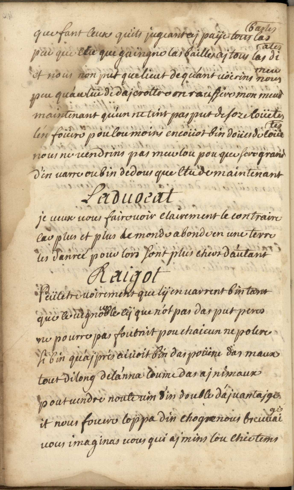
que fant ceux qu'ils jugeant ai paÿe tous las basles
peu que etre que gaingne las bailles ai tous les diales
et nous non put que lieur de qu'ant uöerins nous meu nous
peu qu'au lüe de daicrottere on raussire mon meu
maintenant qu'un ne tint pas put de soze coüetes
l'en foüere pou lou moins encoüot bin doües de coüetes
nous ne uendrins pas meu lou pou que sere grand
d'in uarre ou bin dedous que ctu de maintenant.
L'aduocat
Je ueux uous faire uoir clairement le contraire
car plus et plus de monde abonde en une terre
les danrée pour lors sont plus chere d'autant.
Raigot
Peütetre uoirement que lÿ en uarrent bin tant
que le uignoble cÿ que n'ot pas das put peres
ne pourre pas fournir pou chaicun ne polere
si bin qu'aiprés aiuoit bin das poüene das maux
tout di long de l'anna coume das ainimaux
pour uendre noute uin d'in double d'aiuantaige
it nous fouere coppa din chogne nous breuuaige
uous imaginas uous qui ai mins lou chie tems
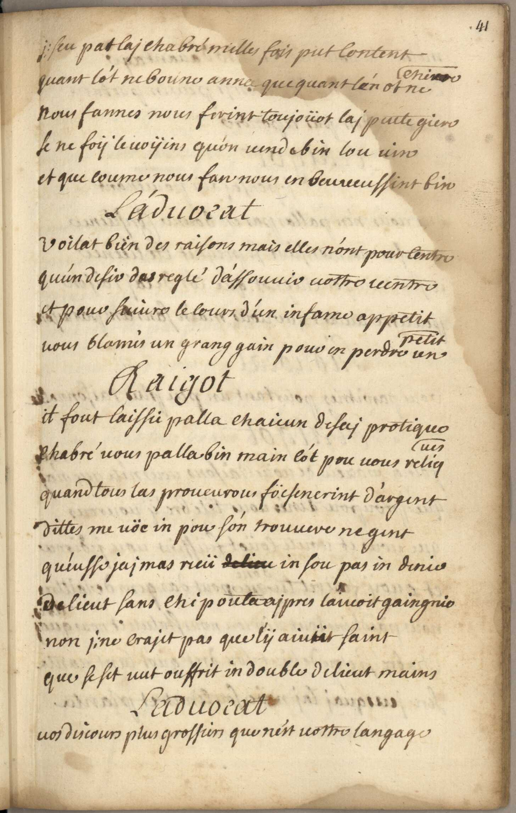
Ji scu par lai chabré milles fois put content
quans l'ot ne boune anne que quant l'en ot ne chiure
nous fannes nous ferint toujoüor leai peute giere
Se ne foÿ le uoÿins qu'on uende bin lou uin
et que coume nous fan nous en beurecussint bin
L'aduocat
Voilat bien des raisons mais elles n'ont pour centre
qu'un desir dasreglé d'assouuir uostre uentre
et pour suiure le cours d'un infame appetit
uous blamés un grang gain pour en perdre un petit.
Raigot
It fout laissie palla chaicun de sai protique
chabré uous palla bin main c'ot pou uous reliques
quand tous las proucurour föesenerint d'argent
dittes me uöe in pou s'on trouuere regent
qu'eusse jaimas recü de lieu in sou pas in denie
de lieur dans chipouta aipres laiuoit gaingnie
non ji ne craijet pas que l'ÿ aiuür saint
que se set uut ouffrir in double de lieur mains
L'aduocat
Uos discours plus grossiers que n'est uottre langage
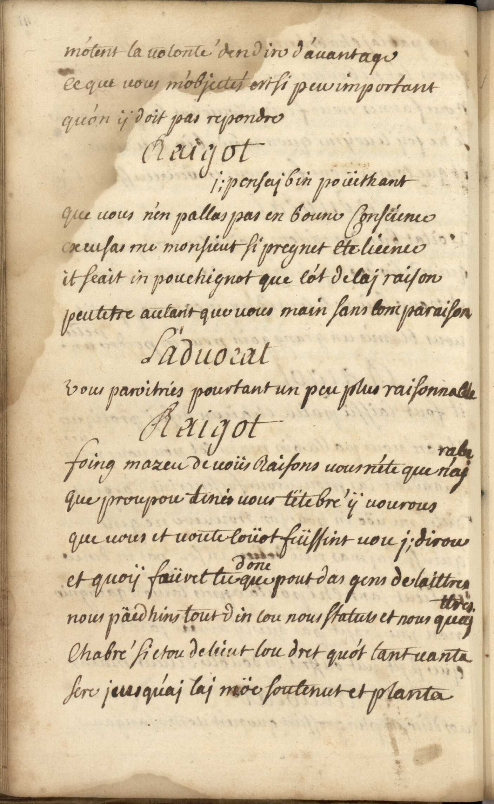
m'otent la uolonté d'en dire d'auantage
ce que uous m'objectés est si peu important
qu'on ÿ doit pas repondre
Raigot
Ji pensai bin poüethant
que uous n'en pallas pas en boune conscience
excusas me monsieur si pregnet cte licence
it scait in pouchignot que c'ot de lai raison
peut etre autant que uous main sans comparaison
L'advocat
Uous paroitriés pourtant un peu plus raisonnable
Raigot
Foing mazeu de uoüs raisons vous n'ete que n'airabe
que proupou tenés uous tëte bré ÿ uourous
que uous et uoute coüot fuissint uou ji dirou
et quoÿ faüret tu donc que pour das gens de laittres
nous päedhins tout din cou nous statuts et nous quaittres.
Chabré si etou de lieur lou dret qu'ot tant uanta
sere jeusqu'ai lai möe soutenut et planta
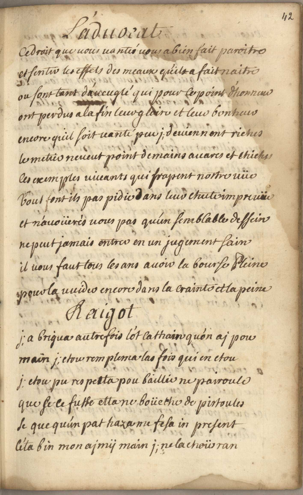
L'aduocat
Ce droit que uous uantés uous a bien fait paroitre
et sentir les effets des meaux qu'ils a fait naitre
ou sont tant d'aueuglé qui pour le point d'honneur
ont perdus a la fin leur gloire et leur bonheur
encore quil soit uanté peu ji deuiennent riches
le metier reuient point demains auares et chiches
ces exemples uiuants qui frapent nostre uüe
Uous font ils pas pidie dans leur chute impreuüe
et n'auoüerés uous pas qu'un semblable dessein
ne peut jamais entrer en un jugement sain
il uous faut tous les ans auoir la bourse pleine
pour la uider encore dans la crainte et la peine
Raigot
Jia brigua autrefois l'ot cathain qu'on ai pou
main ji etou remplema las fois qui en etou
ji etout pu respecta pou baillie ne pairoule
que ce-ce fusse etta ne boüeche de pistoules
Se que qu'un par haza me fesa in present
c'eta bin mon aimÿ main ji ne la choüs ran
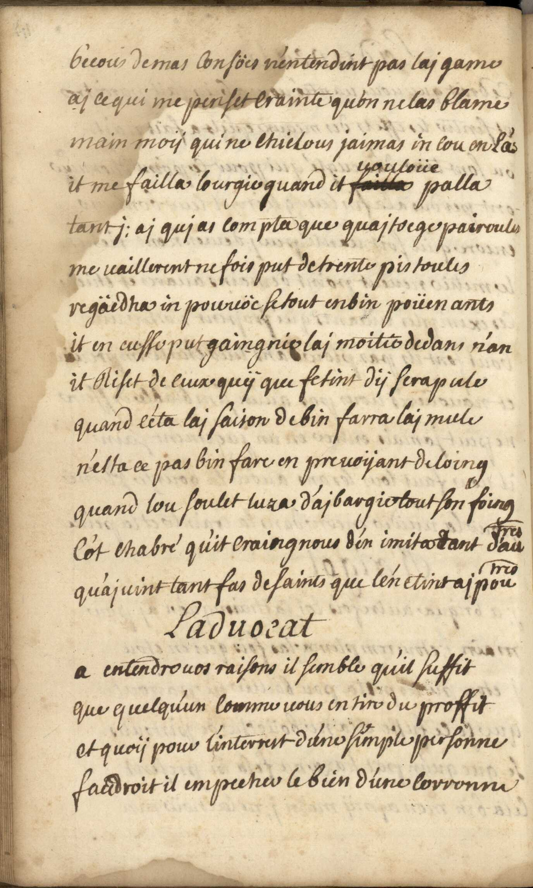
becous de mas consöes n'entendint pas lai game
ai ce qui me penser crainte qu'on ne las blame
main moÿ qui ne chiclous jaimas in cou on l'as
it me failla lourgie quand il uouloüe palla
tant ji ai qui as compta que quaitoege pairoules
me uaillerent ne fois put de trente pistoules
regäedha in pouriöe se tout en bin poüenants
it en eusse put gaingnie lai moitie dedans n'an
it riset de ceux quÿ que fesint dÿ scrapule
quand c'eta lai saison de bin farra lai mule
n'esta ce pas bin fare en preuoÿant de loing
quand lou soulet luza d'aibargie tout son foing
c'ot chabré qu'it craingnous d'en imita tant d'autres
qu'aiuint tant fas de saints que cen etint aipoutres
L'aduocat
a entendre uos raisons il semble qu'il suffit
que quelqu'un coumme uous en tire du proffit
et quoÿ pour l'interrest d'une simple personne
faudroit il empecher le bien d'une corronne
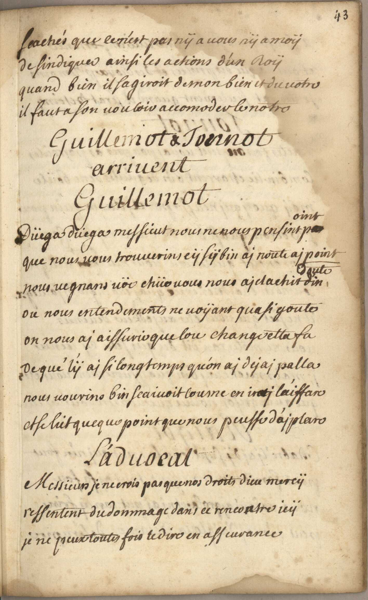
scachés que ce n'est pas nÿ a uous nÿ a moÿ
de sindiquer ainsi les actions d'un Roÿ
quand bin il sagiroit de mon bien et du uotre
il faut a son uouloir accomoder le notre
Guillemot & Tonnot arriuent
Guillemot
Düega düega messieut nous ne nous pensint point
que nous uous trouuerins cÿ sÿ bin ai noute ai point
nous uegnans uöe chüe uous nous aiclachir d'in doute
ou nous entendements ne uoÿant quasi goute
on nous ai aissurie que lou change etta fa
de qué lÿ ai si longtemps qu'on ai dejai palla
nous uourins bin scaiuoir coume en irai l'aiffare
et se liet queque point que nous peuffe d'aiplare
L'aduocat
Messieurs je ne crois pas que nos droits dieu mercÿ
ressentent du dommage dans ce rencontre icÿ
je ne peux toutes fois te dire en asseurance
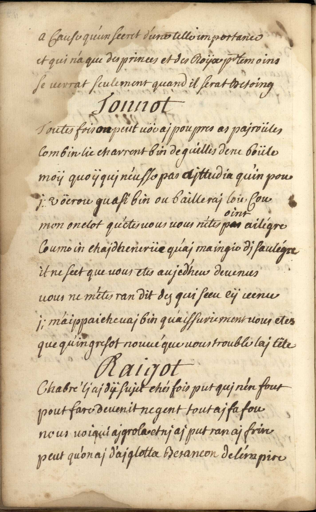
a cause qu'un secret d'un telle importance
et qui n'a que des princes et des Roÿx p[ou]r temoins
se uerrat seulement quand il serat besoing
Tonnot
Toutes fois on peut uöe ai pou pres as pairoüles
combin lie charrent bin de guilles de ne boüle
moÿ quoÿ qui n'eusse pas aittudia qu'in pou
ji uöerrou quasi bin ou baillerai lou cou
mon onclot qu'etes uous uous n'est point ailégre
Coume in chaidhenerüe qu'ai maingie di saulégre
it ne scet que uous etes aujed'heu deuenus
uous ne m'etes ran dit des qui sceu cÿ uenu
ji m'aippaicheuai bin qu'aissuriement uous etes
que qu'in gresot nouué que uous trouble lai tëte
Raigot
Chabré li ai dÿ sujet chés fois put qui n'en fout
pour fare deuenir ne gent tout ai fa fou
nous uoiqui aigrola et ni ai put ran ai frire
peut qu'on ai d'aiglotta Besancon de l'empire
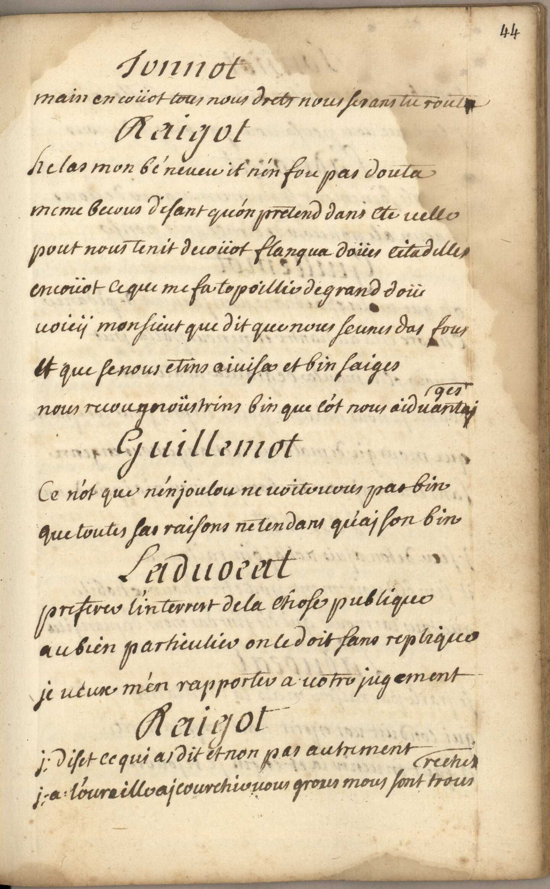
Tonnot
main encoüot tous nous drets nous serans tu routa
Raigot
Helas mon bé neueu it n'en fou pas douta
meme becous disant qu'on pretend dans cte uelle
pour nous tenir decoüot flanqua doües citadelles
encoüot ce que me fa topoillie de grand doüe
uoicÿ monsieur que dit que nous scumes das fous
et que se nous etins aiuisa et bin saige
nous recougnoüstrins bien que c'ot nous aiduantaiges
Guillemot
Ce n'ot que n'enjoulou ne uoite uous pas bin
que toutes sas raisons ne tendans qu'ai son bin
L'aduocat
Preferer l'interrest de la chose publique
au bien particulier on le doit sans replique
je ueux m'en rapporter a uotre jugement
Raigot
Ji diset ce qui as dit et non pas autrement
ji a l'oureille aicourchie uous grous mous sont trous reches
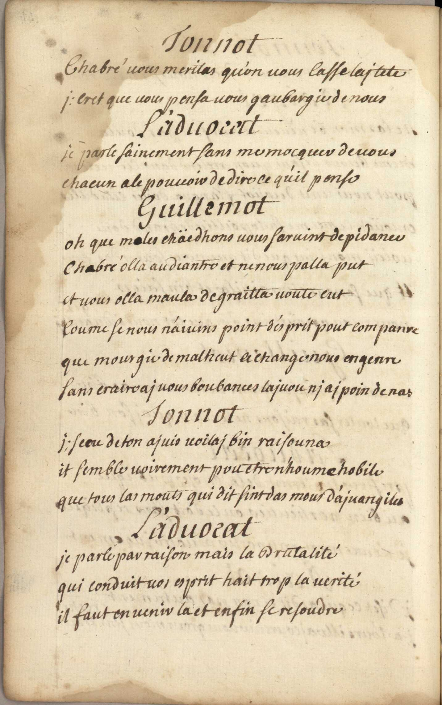
Tonnot
Chabré uous meritas qu'on uous casse lai tete
ji cret que uous pensa uous gaubargie de nous
L'aduocat
Je parle sainement sans me mocquer de uous
chacun a le pouvoir de dire ce qu'il pense
Guillemot
Oh que mole chäedhons uous saruint de pidance
chabré olla au diantre et ne nous palla put
et uous olla maula de graitta uoute cut
coume se nous n'aiuins point d'esprit pour companre
que mous gie de malheur ce change nous engenre
sans craire ai uous boubances lai uou ni ai poin de nas
Tonnot
Ji sceu de ton aiuis uoilai bin raisouna
it semble uoirement pou etre n'houme hobile
que tous las mouts qui dit sint das mous d'aiuangiles
L'aduocat
Je parle par raison mais la brutalité
qui conduit uos esprit hait trop la uerité
il faut en uenir la et enfin se resoudre
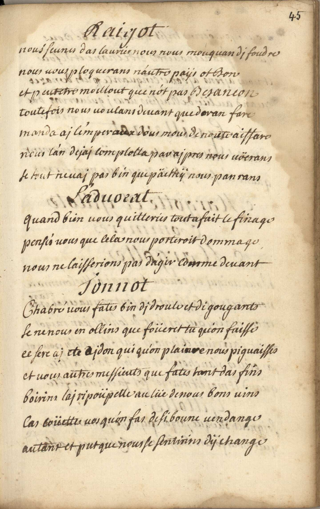
Raigot
Nous scunes das laurier nous nous mouquan di foudre
nous uous ploquerans n'autre paÿs ot bon
et peut etre moillour que n'ot pas Besancon
toutefois nous uoulans deuant que de ran fare
manda ai l'empereux dous mous de noute aiffare
nous l'an dejai complotta par aipres nous uöerans
se tout ne uai pas bin que pärthÿ nous panrans
L'aduocat
Quand bien uous quitteries tout a fait le finage
pensés uous que cela nous porteroit dommage
nous ne laisserions pas d'agir comme deuant
Tonnot
Chabré uous fates bin di droule et di gougants
Se ne nous en ollins que foüeret tu qu'on faisse
ce sere au cte didon qui qu'on plainre nous piguaisses
et uous autres messieuts que fates tant das fins
boirins lai ripoüpelle au lüe de nous bons uins
cas coüettes uos qu'on fas de si boune uendange
autant et put que nous se sentirins dÿ change
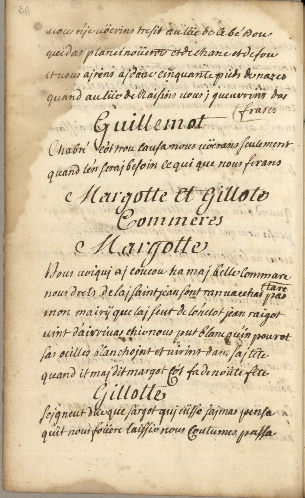
uous n'ie uöerins tresir au lüe de le bé bou
que das plancinoüerots et de chane et de sou
et uous airins ai donc cinquante pieds de nazes
quand au lüe de Raisins uous i gueurrins das frases
Guillemot
Chabré c'ot trou causa nous uöerans seulement
quand l'en serai besoin cequi que nous ferans.
Margotte et Gillote, commeres
Margotte
Nous uoiqui ai coucou ha mai belle commare
nous drets de lai saint jean sont ranuaarchas par tare
mon mairÿ que lai scut de l'onclot jean raigot
uint d'airriuas chie nous put blanc qu'in pourot
sas oeilles blanchoint et uirint dans sai tëte
quand il mai dit margot c'ot fa de noüte fëte
Gillotte
Seigneur düe que sargot qui eüsse jaimas pensa
qu'il nous foüere laissie nous coutumes passa
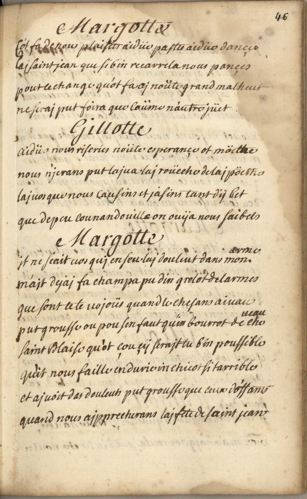
Margotte
C'ot fa de nous plaisïrs aidüe pastes, aidüe dançes
lai saint jean que si bin recarrela nous pançes
pour ce change qu'ot fa ai noüte grand malheur
ne serai put foira que coüme n'autre jüer
Gillotte
aidüs nous riserie noüte esperançe ot möethe
nous n'i crans put la jua lai roëche de lai pöethe
lai uos que nous causins et jasins tant dÿ bet
que de peu coun andouille on ouÿa nous saibets
Margotte
Il ne scait uos qui en seu lai douleur dans mon armeâme
m'ait dejai fa champa pu din grelot de larmes
que sont cete uoioüs quand le chesans aiuau
put grousse ou pou sen faut qu'in bourrot de cheueau
saint Blaise qu'ot çoucÿ serait tu bin poussible
qu'il nous faille endurie in chicot si tarrible
et aiuoit das douleurs put grousse que ceux d'offants
quand nous aipprecherans lai fete de saint jean.
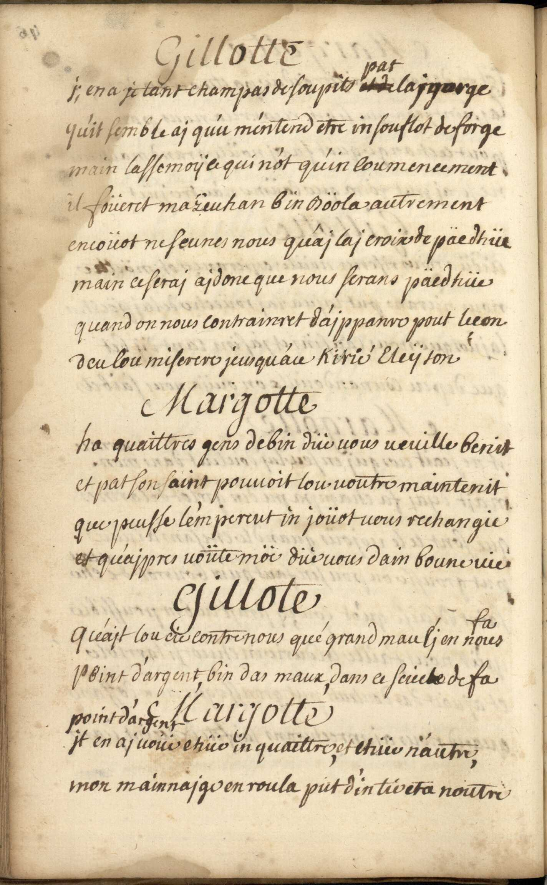
Gillotte
Ji en a je tant champas de soupirs par lai gorge
qu'il semble ai que m'entend etre in souflot de forge
main lasse moÿ ce qui n'ot qu'in coumencement
il foüeret mazeuhan bin böola autrement
encoüot ne scunes nous qu'ai lai croix de pärdhüe
main ce serai aidonc que nous serans päedhüe
quand on nous contrainret d'aippanre pour leçon
deu lou miserere jeusqu'au kirié elcÿson
Margotte
ha quaittres gens de bin düe uous ueille benit
et par son saint pouuoir lou uoutre maintenit
que peusse l'empereur in joüot yous rechangie
et qu'aipres uoüte möe düe uous dain boune uie
Gillote
Qu'ait lou cie contre nous qué grand mau l'i en nous fa
point d'argent, bin das maux, dans ce sciecle de fa
Margotte
Point d'argent
Il en ai uoüe chüe in quaittre, et chüe n'autre,
mon mainnaige en roula put d'intie eta noutre
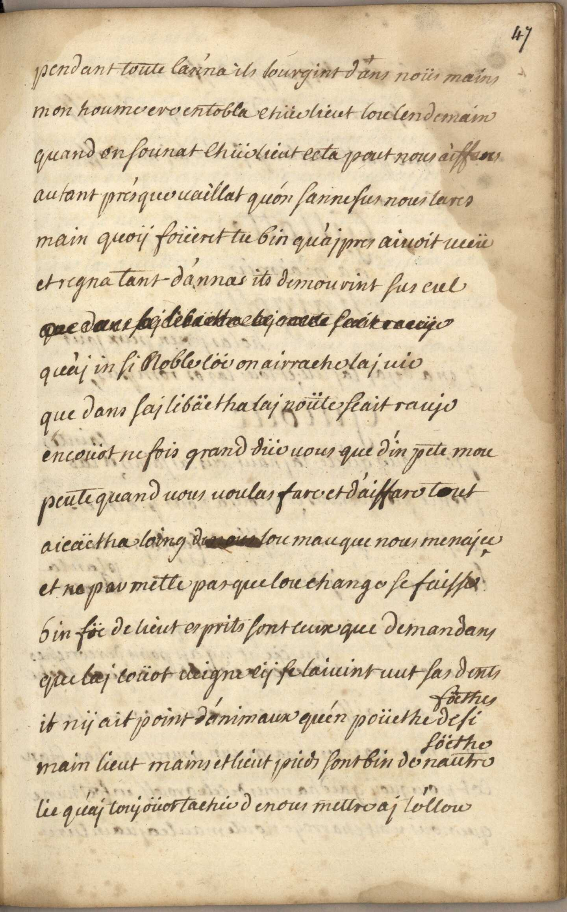
pendant toute l'anna ils lourgint dans noüs mains
mon houme ere entobla chüe lieut lou lendemain
quand on sounat chüe lieur ceta pour nous aiffares
autant presque uaillat qu'on sanne sur nous lares
main quoÿ foüeret tu bin qu'aipres aiuoit ueüe
et regna tant d'annas its demourint sur cul
que dans sai libäe thalai noüte scait rauje
qu'ai in si noble cöe on airrache lai uie
que dans sai libäetha lai noüte scait rauje
encoüot ne fois grand düe uous que d'in pete mou
peute quand uous uoulas fare et d'aiffare tout
aicaëtha loing de nous lou mau que nous menaiçe
et ne parmette par que lou change se faisse
bin föe de lieut esprits sont ceux que demandans
qui lai coüot ueigne cÿ se laiuint uut sas dents
it nÿ ait point d'animaux qu'en poüethe de si föethe
main lieur mains et lieur pieds sont bin de nautre söethe
lie qu'ai toujoüot tachie de nous mettre ai tollou
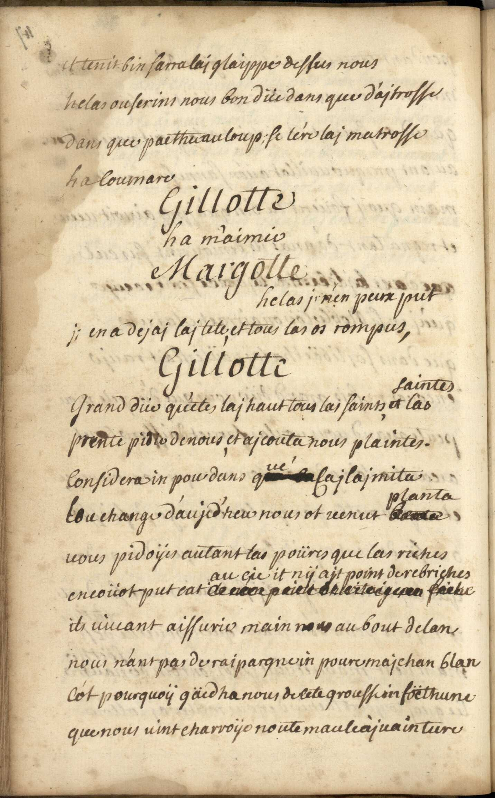
et tenir bin sarra lai glaippe dessus nous
helas ou serins nous bon düe dans que d'aitrosse
dans que paethu au coup, se cere lai matrosse
ha coumares
Gillotte
ha m'aimie
Margotte
helas ji n'en peux put
ji en a dejai lai tete, et tous las os rompus
Gillotte
Grand düe qu'etes lai haut tous las saints, et las saintes
prente pidie de nous et aicouta nous plaintes.
considera in pou dans qué cailaimita
lou change d'aujed'heu nous ot uenut planta
uous pidoÿes autant las poüres que las riches
encoüot put car au cie it n'ÿ ait point de rebriches
its uiuvant aissurie main nous au bout de lan
nous n'ant pas de raipargne in poure maichan blan
c'ot pourquoÿ gäedha nous de cete grousse inföethune
que nous uint charroÿe noute maule aiuainture
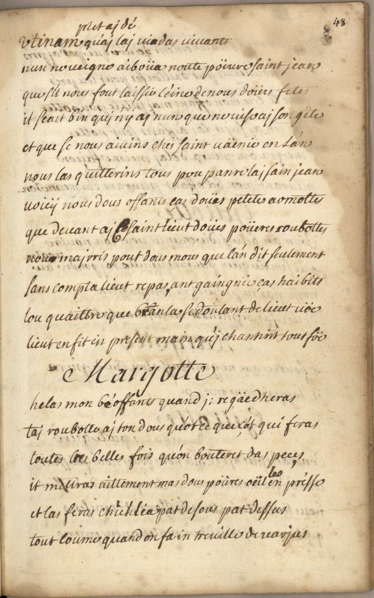
Utinams.l. plet ai di qu'ai lai uie das uiuants
nun ne ueigne aiboüa noute pöeure saint jean
que s'il nous fout laissie l'une de nous doües fetes
il scait bin qui nÿ ai nun que ne uise ai son gïte
et que se nous aiuins cher saint uäenie en l'an
nous las quittetins tous pou panre lai sain jean
uoicÿ nous dous offants ças doües petetes armottes
que deuant ai ce saint lieur doües poüeres roubottes
noüe mairris pour dous mous que l'an dit seulement
sans compta lieur repas, ant gaingnie ças haibits
lou quaittre que branla se doulant de lieur uöe
lieur en fit in present main qui chantint tout föe
Margotte
Helas mon bé offants quand ji regäedheras
tai roubotte ai ton dous qu'otee que c'ot qui fera
toutes las belles fois qu'on bouteret das peçes
it mettras uittement mas dous poüvres oeilles en présse
et las feras chichlia par desous par dessus
tout coume quand on fa in treuille de uarpes
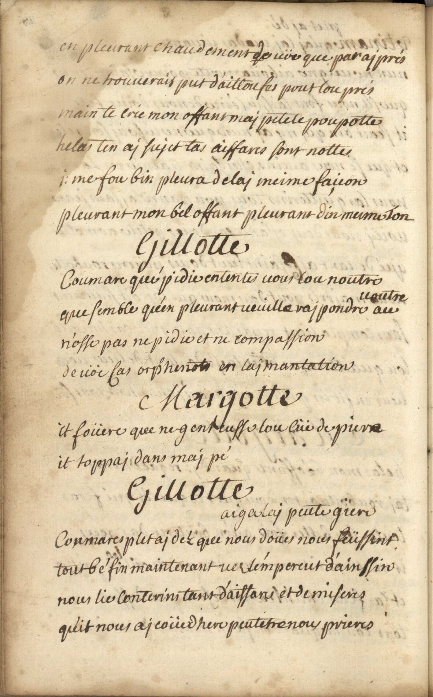
en pleurant chaudement de uöe que par aiprés
on ne trouuerais put d'aittouses pour lou prés
main te crie mon offant mai petete poupotte
helas ten ai sujet et tas aiffares sont nottes
ji me fou bin pleura delai meime faiçon
pleurant mon bel offant pleurant din meime ton
Gillotte
Coumare qué pidie ententes uous lou noutre
que semble qu'en pleurant ueuille raipondre au uoutre
n'osse pas ne pidie et ne compassion
de uöe cas orphenots en laimantation
Margotte
It foüere que ne gent eusse lou cüe de pierre
it toppai dans mai pé
Gillotte
aiga lai peute giere
coumares plet ai dez que nous doües nous feüssint
tout bé fin maintenant uer l'empereur d'ainssin
nous lie conterins tant d'aiffares et de miseres
qu'il nous aicoüedhere peutetre nous prieres
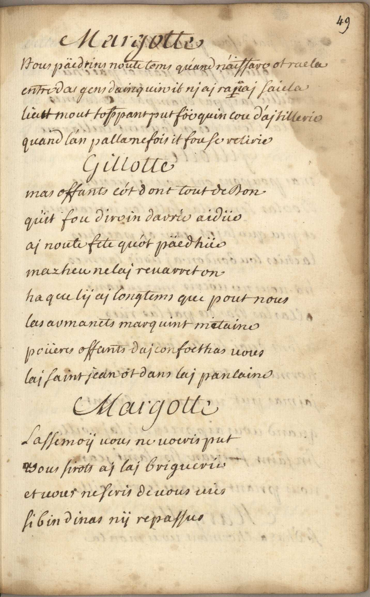
Margotte
Nous päedrins noute tems qu'and n'aiffare ot racla
entre das gens dainq uiruit ni ai rapai saicla
lieur mout totppant put föe quin cou d'aitillerie
quand l'an palla ne fois it fou se retirie
Gillotte
mas offants c'ot dont tout de bon
qu'il fou dire in darrie aidüe
ai noute fete qu'ot päedhüe
mazheu nelai reuarret on
ha que lÿ ai longtems que pour nous
las armanet marquint mitaine
poüeres offants daiconfoethas uous
lai saint jean ot dans lai pancaine
Margotte
Lasse moÿ uous ne uoeris put
uous sirots ai lai briguerie
et uous ne feris de uous uies
si bin dinas nÿ repasses
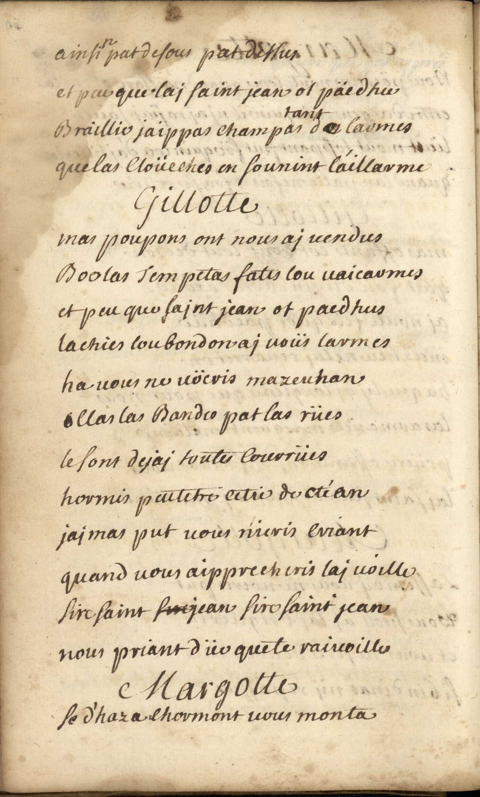
ainsin par desous par dessus
et peu que lai saint jean ot päedhu
Braillie jaippas champas tant de larmes
que las cloüches en sounint l'aillarme
Gillotte
mas poupons ont nous ai uendus
boolas tempetas fates lou uaicarmes
et peu que saint jean ot paedhus
lachier lou bondon ai uoüs larmes
ha uous ne uöeris mazeuhan
ollas las bandes par las rües
le sont dejai toutes courrües
hormis paitetre cetu ce cté an
jaimas put uous nieris criant
quand uous aipprecheris lai uoille
sire saint jean sire saint jean
nous priant düe que te raiuoille
Margotte
Se d'haza chormont uous monta
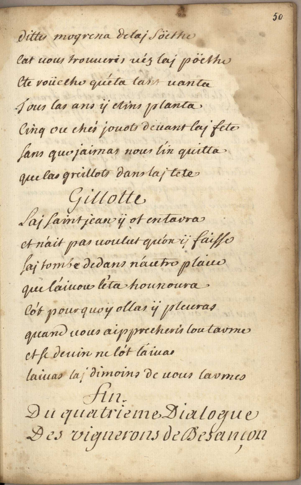
dittes mogrena delai söethe
car uous trouueris uéz lai pöethe
Cte roüeche qu'eta tant uanta
tous las ans ÿ etins planta
cinq ou chis jouots deuant lai fete
sans que jaimas nous l'in quitta
que las greillots dans lai tete
Gillotte
Lai saint jean ÿ ot entarra
et n'ait pas uoulut qu'on ÿ faisse
sai tombe dedans n'autre plaice
que l'aiuou c'eta hounoura
c'ot pourquoÿ olla ÿ pleuras
quand uous aipprecheris lou tarme
et se deuin ne l'ot laiuas
laiuas lai dimoins de uous larmes.
Fin. Du quatrieme dialogue des uignerons de Besançon